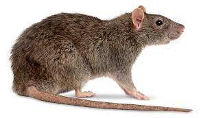
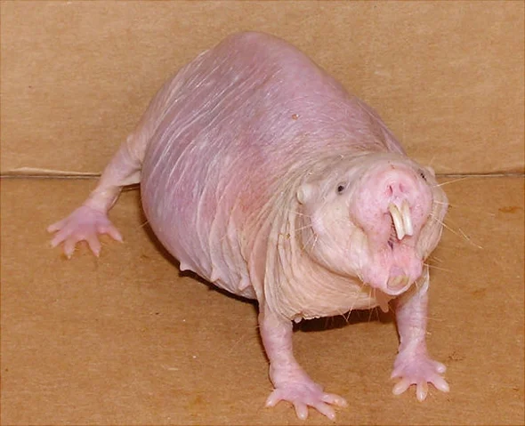

Rats (genus rattus) are small vermin that live on every continent other than Antarctica. These animals are comonly kept as pets, for some reason. Being omnivores, they eat small incests, fruits, vegetables, etc. Most rats are wild, and carry rabies. This makes it very dangerous to approach or touch a rat. This also means they are widly hunted.
 